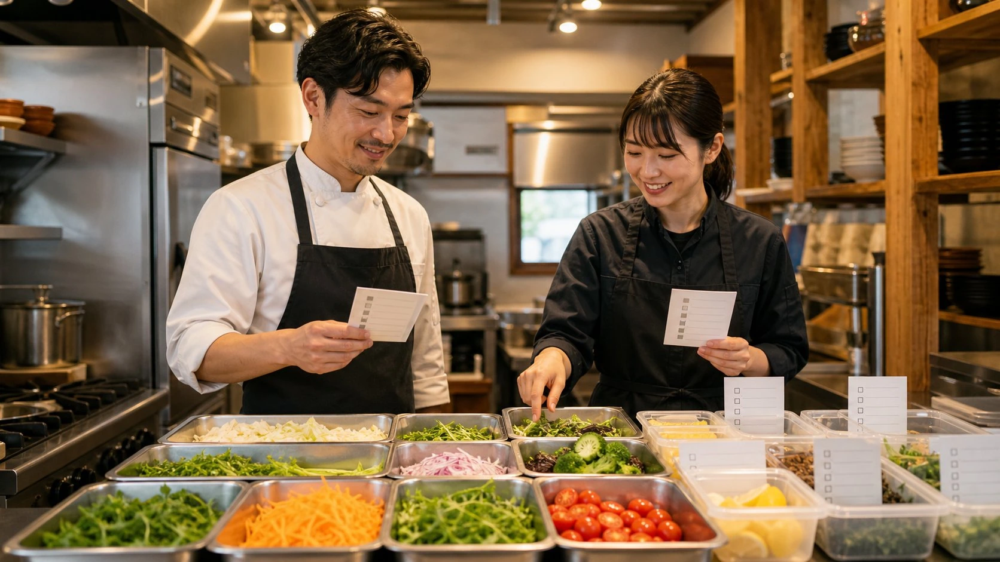
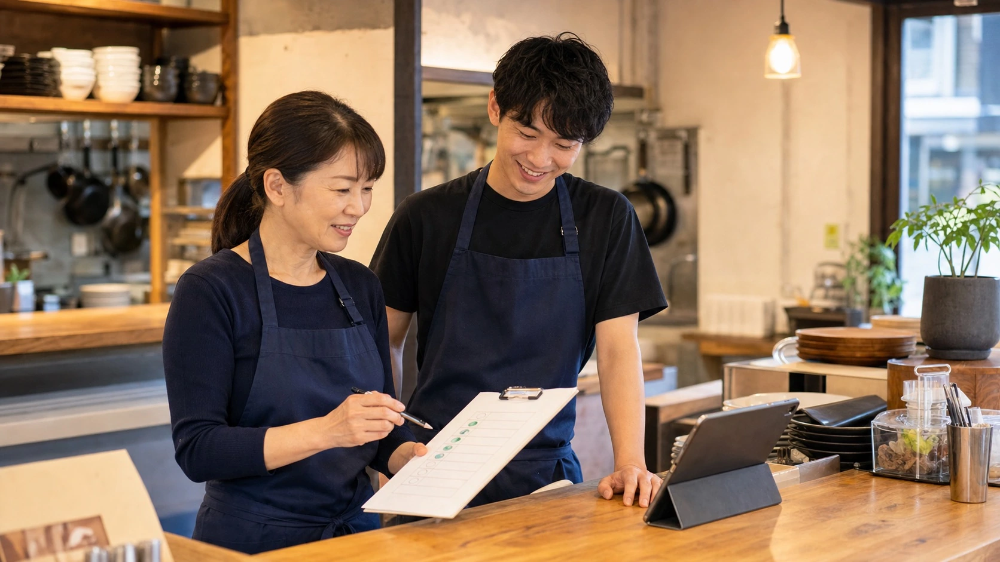

業務改善の例 / 飲食店・仕込み計画
予約・天気・在庫を比べ、仕込みすぎと品切れを抑える
開店前に予約表・天気・前週売上・残り食材を見比べて迷っていた仕込み量を、店長が見直せる候補リストにします。AIは増やす理由、抑える理由、不足しそうな食材、人手が薄い時間帯を先に並べ、店長は味・品質・廃棄リスク・スタッフ配置を見て最終判断します。
先に結論
店長の経験を生かしながら、予約数・天気・在庫を開店前に照らし合わせます。
飲食店では、営業前の30分に、予約数、天気、残り食材、出勤メンバーの確認が一気に重なります。
店長は電話を受け、納品を確認しながら、「ランチ用のご飯や副菜を増やすか」「雨なら仕込みを抑えるか」を頭の中で抱えていました。
予約表、天気予報、同じ曜日の売上、在庫メモ、出勤予定を読み込ませると、食材ごとの仕込み量、不足しそうな食材、混みそうな時間帯が一覧になります。
最後に店長が、味、品質、廃棄リスク、当日の客層、スタッフの慣れ具合を見て調整します。
仕事の変化
不足食材と混雑時間が開店前に分かり、厨房への指示を早く出せます。
予約表と在庫メモを開く間に、仕込みの手が止まる
営業前、店長は予約表、前日残り、納品予定、スタッフチャットを一つずつ開いていました。手は動いていても、今日のピーク、不足しそうな食材、人を厚くしたい時間帯が一目で見えず、不安が残ります。
予約表と在庫メモを開き直さず、不足食材と必要な仕込み量を把握する
予約表、天気、同じ曜日の売上、在庫メモ、納品予定、出勤予定をAIに読み込ませます。食材ごとの仕込み量、不足しそうな食材、混みそうな時間帯、人手が足りない時間帯が一枚の表になります。
店長が仕込み量を決め、厨房へ早く指示を出せる
改善後、店長は白紙から考えず、AIが並べた候補を見て「増やす・減らす・そのまま」を決めるところから始められます。判断が早まる分、厨房の段取りやスタッフへの声かけを早く始められます。
改善後の実感
開店前に必要な情報がそろい、仕込み量を決めるまでの迷いが減ります。
予約表と在庫メモを何度も見直す
予約表、スタッフチャット、紙の在庫メモ、納品予定、曜日別売上を店長が行き来していました。
白紙から仕込み量を考えず、増減が必要な食材だけを調整する
仕込み量候補、ピーク予測、不足食材、スタッフ配置の注意点がそろい、店長は増減の調整から始められます。
営業前の迷いを減らす
仕込みチェックが早く終わると、厨房の段取り、スタッフへの声かけ、客席準備に取りかかれます。
仕込み判断
予約変更と在庫確認が重なり、厨房への指示が開店直前まで決まらない。
開店前の厨房の作業台には、予約表、前日の残りメモ、納品伝票、スタッフの出勤予定が広がっていました。
雨予報で団体予約が一組減ったところへ、常連客から席の追加連絡が入り、ホールからは「今日のランチ、何を多めに出しますか」と声がかかります。
店長は鍋の火を見ながら、同じ曜日の売上、紙の在庫メモ、スタッフチャット、納品予定を行き来し、仕込みを増やす理由と抑える理由を頭の中で比べていました。
予約表、天気、前週売上、在庫メモ、納品予定、出勤予定をAIに読み込ませると、食材別の仕込み候補と不足食材が表へ記載されます。
AIが、増やしたい仕込み、減らしたい仕込み、不足しそうな食材、人手が足りない時間帯を一枚の表にまとめます。店長は理由を比べながら、その日の量と配置を決められます。
店長が味と品質、廃棄リスク、当日の客層、スタッフの慣れ具合を見て仕込み量を調整します。予約表や在庫メモを開き直す回数が減り、開店前に盛り付けと新人への指示を準備できます。
改善のイメージ
仕込み量を決める前に、予約、天気、在庫、シフトを一つの一覧で見比べます。
増やす理由を見比べる
予約数、天気、前週売上、残り食材が同じ画面に並ぶため、仕込みを増やす理由と抑える理由を見比べられます。

仕込み表を確認する
食材ごとの仕込み量と残り食材が見えるため、店長は足りないものから確認できます。

注意点を先に見る
人手が薄い時間帯、不足しそうな食材、増やす候補をチェックリストで確認できます。
導入前
導入前は、仕込み量とシフト確認の前に資料探しと見落としの不安がありました。
予約表、スタッフチャット、紙の在庫メモ、納品予定、曜日別売上を店長が行き来していました。
ピーク時間、不足食材、人を厚くしたい時間帯を、店長が頭の中で組み合わせていました。
チェックに時間がかかるほど、厨房の段取りやスタッフへの声かけが短くなっていました。
仕事の流れ
予約・在庫・出勤予定から、開店前の仕込み表を作ります。
予約表、天気、曜日別売上、在庫メモ、納品予定、出勤予定を用意します。
予約数、前週売上、在庫から仕込み量の候補を作り、不足しそうな食材に印を付けます。
混みそうな時間帯とスタッフ配置の注意点を出します。
仕込み量、味、品質、廃棄リスク、当日の客層、スタッフ配置は店長が見ます。
人とAIの分担
AIが仕込み候補を作り、店長が量・品質・配置を決めます。
AIが作る仕込み候補表
- 予約・天気・過去売上の整理
- 仕込み量候補
- 不足食材の抽出
- シフト注意点
店長が食材を見て決める項目
- 味と品質の判断
- 仕入れ・廃棄リスクの判断
- 当日の現場判断
- スタッフ配置